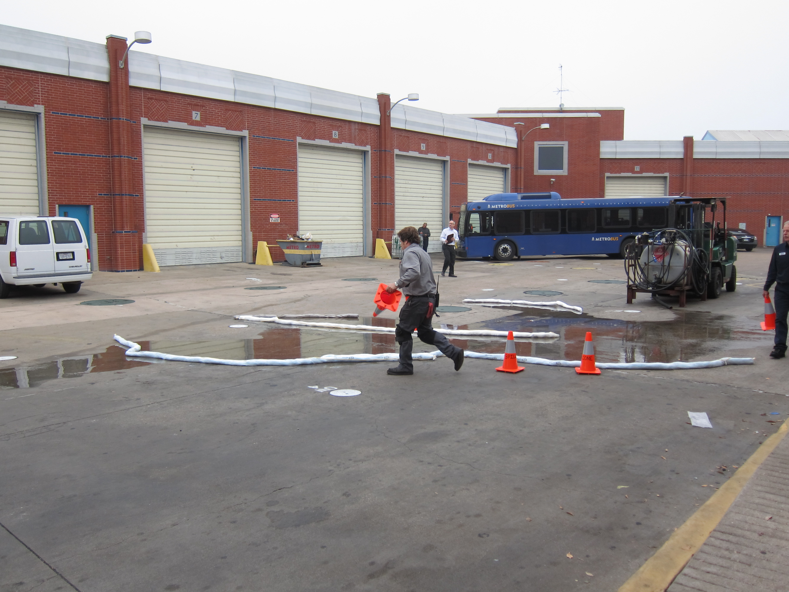

- 50 GALLONS OF DIESEL FUEL DISCHARGED FROM A LIGHT POST THAT FELL OVER DURING HURRICANE MARIA
- The caller is reporting that while making the initial after hurricane assessment they observed a sheen contained within a tank dyke. Additionally the caller is reporting that a large above ground storage tank collapsed, but it is an out of service tank so there is no release. The caller states that they have only accounted for some of the employees at this point, but have not received reports of injuries yet. 50 gallons of diesel fuel discharged from a light post that fell over during Hurricane Maria which sheared off a pressure relief line within the tank dyke.
- Date and time of incident: 21-09-2017, 2:30 PM
-
Location of incident:
(latitude)
(longitude) - 
-


-
- tags:
- air pollution,
- soil contamination,
- other